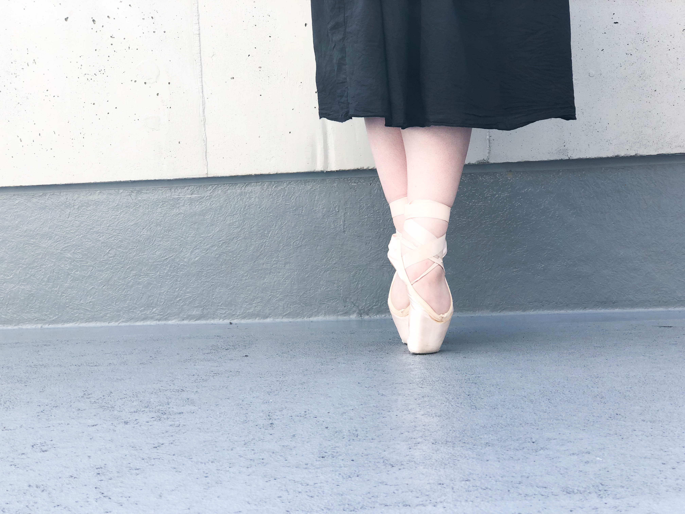

円すいタイプ
プラットフォームが円に近く、上から見ると先細の台形で、横から見るとプラットフォーム から履き口まで傾斜がきついタイプ。合う足のタイプ
・ギリシャ先細型で甲が高い人
・エジプト先細型で甲の高い人
※エジプト型でかなり親指が長い人は、イエローゾーンの右よりのものが良いと思います。
円柱タイプ
プラットフォームが円に近く、上から見ると寸胴タイプ（四角い）で、横から見てプラット フォームから履き口までの傾斜が緩やかなタイプ。合う足のタイプ
・スクエア型で甲が高い人、又は全体的に厚みのある足の人
・エジプト先広型で甲が高い人、又は全体的に厚みのある足の人
・ギリシャ先広型で甲が高い人、又は全体的に厚みのある足の人
つぶれた円すいタイプ
プラットフォームが平たい楕円形で、上から見ると先細の台形で、横から見てプラット フォームから履き口まで傾斜が緩やかなタイプ。合う足のタイプ
・ギリシャ先細型で甲が低い人
・エジプト先細型で甲の低い人
※エジプト型でかなり親指が長い人は、ピンクゾーンの右よりのものが良いと思います。
つぶれた円柱タイプ
プラットフォームが平たい楕円形で、上から見ると寸胴タイプ（四角い）で、横から見て プラットフォームから履き口までの傾斜が緩やかなタイプ。合う足のタイプ
・スクエア型で甲が低い人
・エジプト先広型で甲が低い人
・ギリシャ先広型で甲が低い人

